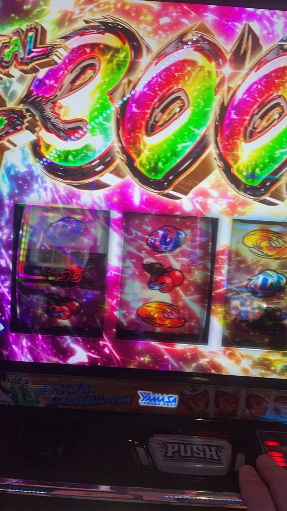
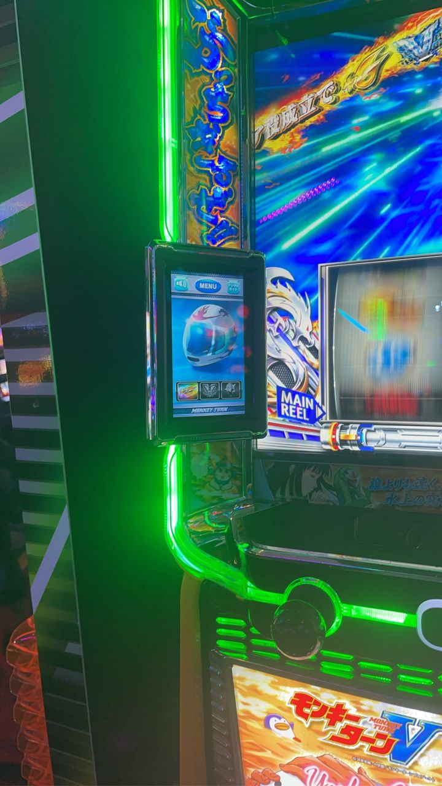
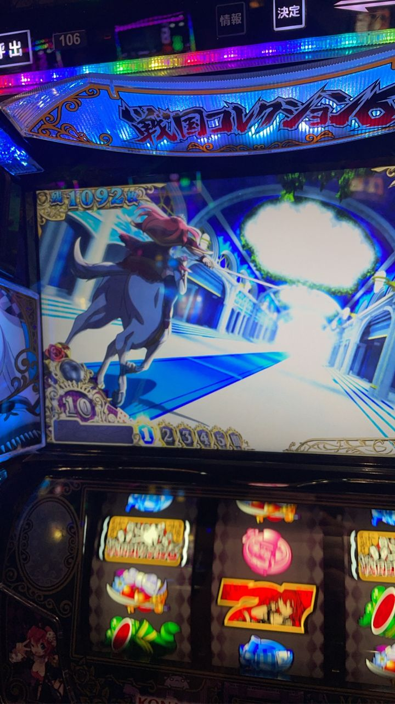
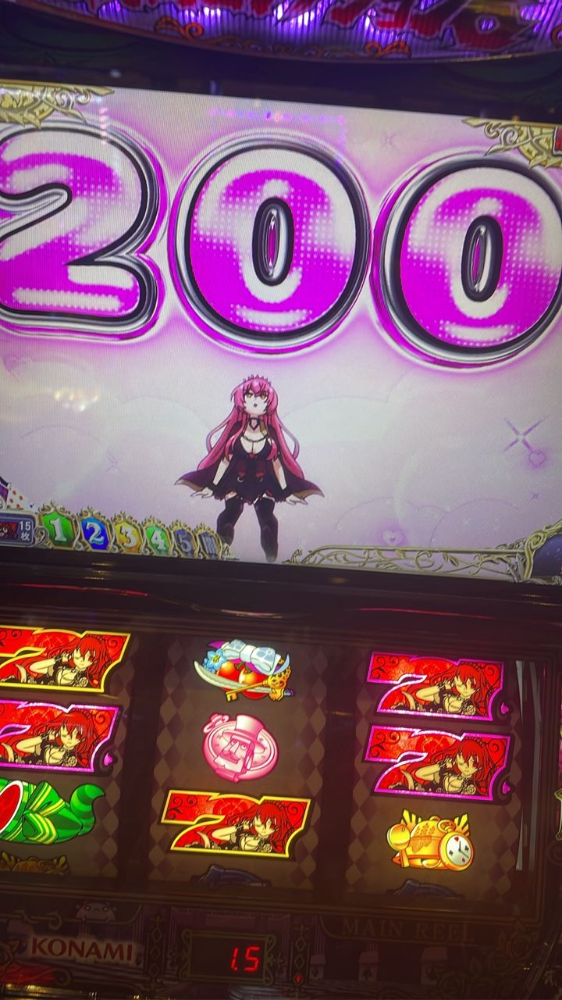
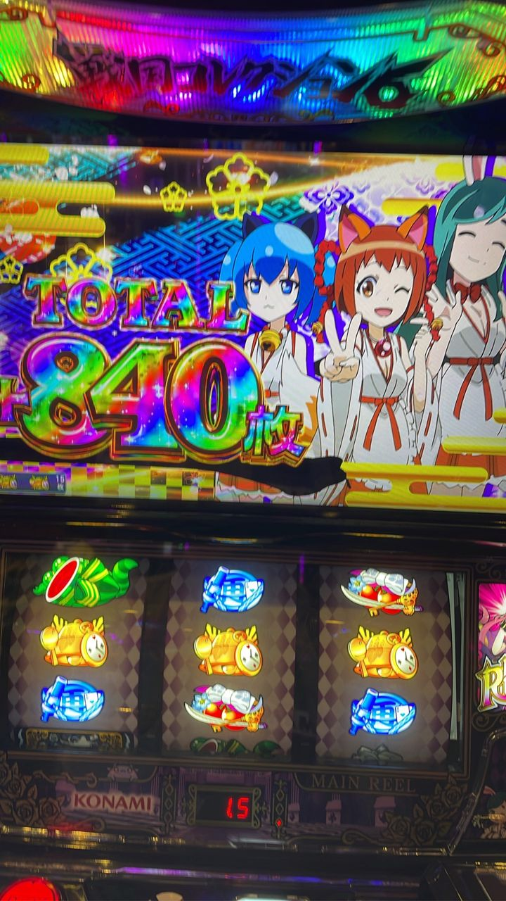
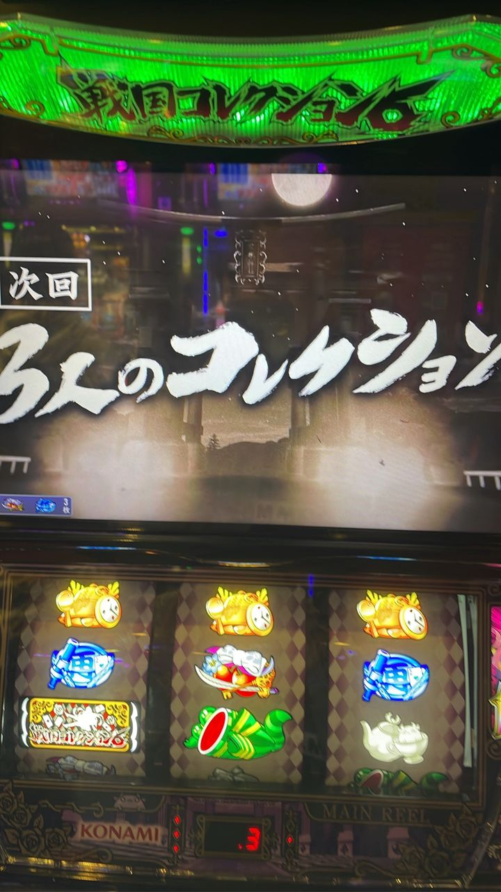

サワムの収支(総合・月別・店別・機種別)を見る →
2026-11-08 ・ 鶯谷のMITOYA ・ 機種: スマスロ モンキーターンV
サワムの日記 ― 収支プラス83000円 4500枚、青島SGと女子王座決定戦
収支＋83000円ぐらい最高5000枚ぐらい最終4500枚ぐらい
この日も、鶯谷のMITOYAで、モンキーターンを打った。
朝は、4000円で1回目が当たった。……そのまま伸びた、と言いたいところだが、嘘である。1台目は、そんなに伸びなかった。天国で当たったものの、200〜300枚で終わった。そこで、隣の台に移った。
この判断が、当たった。隣の台は、1200枚ぐらいまで出た。ここから、有利区間切れを目指して打った。
ところが、かなり削られて、5周期目まで行ってしまった。昨日と同じ展開か、と思った。昨日は、1200枚から、ゼロに戻された。しかし、今日は違った。そこから、また1000枚ぐらい出て、最高到達点まで行った。
それでも、有利区間切れは、しないで終わってしまった。もう一度、目指した。「またダメか」と思ったら、すぐに当たった。確か、天国だった。そこから、ジャクチェで300枚の上乗せ。

「TOTAL 300…」の画面
エンディングまでは行かなかった。3戦目で、負けたと思う。惜しい。
それでも、有利区間切れを達成して、青島SGに入った。そして、その青島SGで、女子王座決定戦も引いた。出玉は、5000枚ぐらいまで伸びた。
この台は、よかったのかもしれない。そのあとも、天国などで当たったが、そこで、やめた。最終的な出玉は、4500枚ぐらい。
収支は、プラス83000円ぐらい。ひさしぶりの、大きな勝ちである。
教訓: 隣の台に移る判断は、当たることがある。昨日と同じ展開に見えても、昨日と同じ結末になるとは、限らない。
2026-11-07 ・ 上野のピア → 鶯谷のMITOYA ・ 機種: スマスロ モンキーターンV → SAOオルタナティブ
サワムの日記 ― 収支プラス10000円 新台のSAOで、スクワッドジャム2へ
収支＋10000円ぐらいモンキーターンV±0円SAOオルタナティブ＋10000円ぐらい(800枚ぐらい)
朝は、上野のピアで、モンキーターンを打った。朝一の台は、3000円で当たった。そこから、出玉は1200枚ぐらいまで伸びた。これが、この日の最高到達点である。
ところが、そこから減らして、結局、プラスマイナスゼロぐらいで、やめた。1200枚から、ゼロへ。それでも、負けなかったのだから、よしとする。
お昼は、焼き鳥屋で、焼き鳥と釜飯を食べた。
午後は、鶯谷のMITOYAに移った。打ったのは、新台のソードアート・オンライン オルタナティブ(ガンゲイル・オンライン)である。まだ、よく分からないまま打ち始めたが、5000円で当たった。
そのあと、全部で6回当たって、少し上のSTに入った。それが、スクワッドジャム2(SJ2)である。解説によると、SJ2は30Gで、継続率は約77%。最初のSJ1(25G・継続率約70%)で、ボスチームを倒すと、ここに昇格する。
結局、出玉は800枚ぐらい。この台は、プラス10000円ぐらいで終わった。モンキーターンのプラスマイナスゼロと合わせて、この日のトータルは、プラス10000円ぐらいである。
教訓: 新台は、分からないまま打っても、プラスになることがある。分からないことは、あとで調べればいい。
参考: ななプレスの解説ページ(スクワッドジャム)。解説はメーカー公式の情報ではありません。
2026-11-06 ・ 鶯谷のMITOYA ・ 機種: スマスロ モンキーターンV
サワムの日記 ― 収支プラス1000円 特に何もない日
収支＋1000円
この日は、鶯谷のMITOYAで、モンキーターンを打った。
結果は、プラス1000円。特に、書くことは、何もない。派手な当たりも、大きなハマりもなかった。ただ、静かに、プラスで終わった。
それでも、プラスはプラスである。財布は、少しだけ、重くなった。
教訓: 何もない日の＋1000円は、いい日である。今日も、頑張ります。
2026-11-05 ・ 杉田のベルシティー ・ 機種: ラグナドール → 戦国コレクション6
サワムの日記 ― 収支プラス14000円 ラグナドールにリベンジして、SR役を3回引いた
収支＋14000円戦国コレクション6＋37000円ぐらい(3000枚弱)ラグナドール－23000円
今日は、杉田のベルシティーで、ラグナドールにリベンジすることにした。前回のハマりを、取り返しに行ったのだ。
ところが、チャンスゾーンを5回連続で外した。それでも、やっと当たった。しかし、出玉は400枚ぐらい。そのあとは、1回目のチャンスゾーンまで打ってみたが、結局、100枚しか残らなかった。リベンジは、不発である。
そこで、戦コレ6に移動した。台を変えるのは、いい判断だった。
この台で、SR役を、なんと3回引いた。通常時のSR役は、AT直撃で、1セット目が200枚からスタートする、最強の役である。それが3回。……ただし、1回もフリーズしなかった。フリーズしてくれ、という願いは、今日も届かなかった。
惜しむらくは、3回とも通常時だったことである。これがAT中だったら、200枚以上の上乗せに加えて、上乗せ特化ゾーン(ロボニャンドライブ・夢幻斬りWONDER・3人のコレクションのどれか)も確定だった。AT中のSR役だったら、よかったのに。
それでも、なんとか最終決戦まで行った。そして、勝った。ところが、勝ったあとに乗ったのは、300枚と550ゲームだけだった。これは、少ない。勝ったのだから、よかったのかもしれないが、もう少し、乗ってほしかった。
出玉は、最終的に3000枚弱。
ラグナドールは、マイナス23000円。戦コレ6が、それを取り返して、プラス37000円ぐらい。差し引きの収支は、プラス14000円である。ラグナドールのリベンジは、戦コレ6が、果たしてくれた。
教訓: リベンジは、同じ台でしなくてもいい。別の台で、取り返せばいい。
参考: ななプレスの解説ページ(SR役)。解説はメーカー公式の情報ではありません。
2026-11-04 ・ 杉田のベルシティー ・ 機種: 戦国コレクション6
サワムの日記 ― 収支プラス8500円 ロボニャンドライブを2回引いた
収支＋8500円
今日は、杉田のベルシティーで、戦コレ6を打った。正直、あまり内容はない日だった。
それでも、見どころは、ひとつあった。途中で、ロボニャンドライブを引いたのだ。上位の特化ゾーンで、7を揃えれば次に継続する。そのロボニャンドライブを、結局、2回引いた。7も揃って、乗せることができた。
最終的な収支は、プラス8500円。内容は薄くても、プラスで帰れたなら、それでいい日である。
教訓: 内容のない日でも、プラスの日は、悪くない。
2026-11-03 ・ 鶯谷のMITOYA ・ 機種: スマスロ モンキーターンV
サワムの日記 ― 収支プラス43000円 艇界のヒロインでグランドスラム、置き忘れたのはプルームテック
収支＋43000円ぐらい最高3000枚ぐらい
この日は、鶯谷のMITOYAで、モンキーターンを打った。
1台目は、5枚役の出方があまりにも悪かったので、初当たりでやめた。見切りが早い。
2台目は、5枚役が、なんとなく出ていたので、打ち続けた。その勘が、当たった。
来たのは、艇界のヒロインだった。ランプは、オールイエローだった(黄色は、そのセットの継続率が50%以上の印である)。途中で、青島がバトルに出てきたりして、Vが、かなり溜まっていた。それでも、最後の2戦は自力で行った。
実は、その前のシナリオで、愛知の巨人があった。しかし、5戦目、いや6戦目ぐらいで負けた。あと一歩のところで、である。悔しい。その悔しさが、次の艇界のヒロインにつながった。
そして、激走チャージで＋100ゲームを引いた。これは、1年以上、引いていなかったものである。これを引いたのを契機(トリガー)に、グランドスラムまで行った。ここから、一気に流れが変わった。

激走チャージの＋100ゲーム
そして、その艇界のヒロインで、グランドスラムを達成した。そのあと、青島SGも、かなり伸びた。出玉は、3000枚ぐらいになった。
休憩は、日高屋で、チャーハンと餃子を食べた。
最終的には、プラス43000円ぐらいの勝ちで終わった。
……ところが、プルームテックを、パチンコ屋に置いてきたようだ。orz(人が倒れている姿の文字絵)。勝った日でも、忘れ物はする。
教訓: グランドスラムは、取り戻せる。プルームテックは、取り戻せるかどうか、分からない。
参考: ちょんぼりすたの解説ページ(シナリオ)。解説はメーカー公式の情報ではありません。
2026-11-02 ・ 上野のピア → 鶯谷のMITOYA ・ 機種: スマスロ モンキーターンV → 戦国コレクション6 → ラグナドール
サワムの日記 ― 収支プラス15000円 朝のグランドスラムと、夜の新台のハマり
収支＋15000円モンキーターンV＋35000円ぐらい戦国コレクション6－3000円ぐらいラグナドール－17000円ぐらい
この日の朝も、上野のピアで、モンキーターンを打った。
朝一の台は、すぐに当たった。しかし、その台はやめて、次の台に移った。この判断が、当たった。その台で、超抜チャレンジを2回引いた。そして、2回目の当たりから、グランドスラムを達成した。7セット継続の、あのグランドスラムである。シナリオは、おそらく成り上がりだったのだろう。
出玉は、2000枚ぐらいまで伸びた。そのあと、台を移して戦コレ6を1000ゲームほど打ったが、3000円ほど減らした程度で済んだ。
勝ったところで、お昼は、お好み焼きともんじゃ焼きを食べた。鉄板が続いた。
夕方は、鶯谷のMITOYAへ行った。打ったのは、新台のラグナドールである。この台は、ユニバーサルの台なので、正直、あまり期待していなかった。そして、案の定、ハマった。期待していなかった台は、期待どおりにハマってくれる。結局、17000円ぐらい負けて、そこでやめた。
それでも、1日のトータルは、プラス15000円ぐらい。朝の貯金が、新台のハマりを受け止めてくれた。
教訓: 朝のグランドスラムは、夜の新台のハマりを、受け止めてくれる。
2026-11-01 ・ 上野のピア ・ 機種: スマスロ モンキーターンV → 戦国コレクション6
サワムの日記 ― 収支プラス15000円 モンキーで減らして、夢幻斬りで取り返した
収支＋15000円モンキー－10000円戦コレ61600枚ぐらい
この日の朝食は、上野の喫茶店ギャランで、ナポリタンを食べた。朝からナポリタン。エネルギーは、満タンである。
朝一は、モンキーターンから始めた。1000円で当たった。幸先がいい。そこから、出玉が1500枚くらいまで増えた。
ここまでは、完璧だった。しかし、そのあとが続かなかった。単発を、繰り返した。出しては、戻され、出しては、戻された。結局、モンキーターンはマイナス10000円で終わった。1500枚まで増えたのに、である。
そこで、戦コレ6に移った。台を変えたのだ。打ち始めの周期で、いきなり当たった。
そして、チェリーから、夢幻斬りWONDERに当選した。全トリガーで上乗せが発生する、上乗せ特化ゾーンである。保障は20トリガー。0.4秒に1回という、超高速の上乗せだ。ここで、890枚が乗った。

夢幻斬りWONDERのあとの画面
その後も出玉は伸びて、最終的に1600枚くらい出た。ここでやめた。モンキーターンの－10000円を取り返して、差し引き、プラス15000円。
帰りは、麦酒と日本酒と蕎麦 TOWAに寄った。注文したのは、天丼セット。そして、鳥飼を飲んで帰った。勝った日の天丼と鳥飼は、うまい。朝のナポリタンから、夜の天丼まで、しっかり食べた一日だった。
教訓: モンキーで減らしても、台を変えれば取り返せる。切り替える勇気は、裏切らない。
参考: ななプレスの解説ページ(夢幻斬りWONDER)。解説はメーカー公式の情報ではありません。
2026-10-31 ・ 杉田のベルシティー → 上野のピア ・ 機種: 戦国コレクション6
サワムの日記 ― 収支プラス700枚ぐらい 2000枚の杉田と、SR目でも単発の上野
収支＋14000円ぐらい杉田2000枚ぐらい上野3連続単発
この日は、2軒をはしごした。最初は杉田のベルシティーで、最初に打った台は、戦コレ6である。
そこで、AT中に武将が3人そろった。ノストラダムス、西郷隆盛、そしてベルで上乗せする武将(足利義満)である。ベルが成立すれば上乗せ濃厚。その上乗せが、西郷隆盛で2倍に昇格し、さらにノストラダムスで3桁以上に昇格する。役者がそろった。
結果は、1600枚の上乗せ。最終的に、2000枚ぐらい出た。台が、本気を出した瞬間だった。
その勢いのまま、上野のピアに移った。ところが、ここから様子が変わった。3回連続で単発である。伸びない。
2枚目の写真は、その上野のピアで引いたSR目である。確率1/16384の、あのSR目だ。引いた。しかし、単発だった。SR目でも伸びないときは、伸びない。
トータルでは、700枚ぐらいの勝ち。杉田で積んだ2000枚から、上野で、だいぶ戻した。それでも、プラスで終われた。
……戦コレ6は、これで引退かな。この日は、思う存分、打った。
教訓: 杉田の2000枚は、上野の単発3回を、受け止めてくれた。勝った日の貯金は、裏切らない。
参考: ななプレスの解説ページ(武将参戦ガチャ・武将の性能・SR役(SR目))。解説はメーカー公式の情報ではありません。
2026-10-27 ・ 上野のピア ・ 機種: 戦国コレクション6
サワムの日記 ― 収支マイナス21000円 4台中3台が、当たり0回
収支－21000円最高400何枚
会社が終わって、夜7時から店に行った。戦コレ6のシマを見ると、4台中、大当たりが0回の台が3台もあった。3台である。人気が、なくなっている。
こういう日は、座る台に困らない。まず、1台に腰を据えた。450回転ぐらいで当たったが、単発で、何もなし。いいところは、なかった。
そこで、もう1台の当たり0回の台に移った。打つと、CZの振り向かせたいむに当たり、そこでATにも当たった。しかし、これも単発だった。
それでも、そのままずるずると続けた。すると、また振り向かせたいむで当たった。今度は2連して、400何枚出た。ここでやめた。
収支は、マイナス21000円。当たり0回の台が3台も残っていたのに、ひとつも爆発しなかった。4台中3台が当たり0回だったのは、人気がないだけでなく、出なかったからかもしれない。
教訓: 当たり0回の台が何台も残っているときは、座る前に考えよう。空いている台には、空いている理由がある。
2026-10-25 ・ 川崎のピア(京急川崎駅前) ・ 機種: スマスロ モンキーターンV
サワムの日記 ― 収支マイナス35000円 お金返してください
収支－35000円ぐらい最高500枚ぐらい
今日打ったのは、モンキーターンだ。朝一の台は、7000円で当たった。そこから500枚ぐらい出た。これが、今日の最高地点だった。ここまでは、悪くなかった。
ところが、そこから先が続かなかった。気がつけば、財布から35000円ぐらいが抜けていた。出ない。最近、稼げていない。正直、稼いでいない。
そこで思わず、台に向かって言った。「お金返してください」。……なんてね。もちろん、返ってこない。
ハッキングされたわけではない。台に、正規の手順で、お金を入れただけだ。「まあいいか」と思って、すぐに、「よくねえよ」と思い直した。
教訓: 負けた日でも、財布の減り方だけは、裏切らない。
2026-10-24 ・ 川崎のピア(京急川崎駅前) ・ 機種: 戦国コレクション6
サワムの日記 ― 収支マイナス30000円 3人のコレクションで840枚出ても、負けは負け
収支－30000円回転数1000回転ほど
今日は京急川崎駅前の川崎のピアで、戦コレ6を1000回転ほど打った。回したのだ。それなりに。
1回目と2回目の当たりは、どちらも単発だった。伸びない。そして3回目は、あの天井が見えてくる、988回転目だった。戦コレ6の通常時の天井は999ゲーム＋αなので、天井まで、あと11ゲーム。そこで引いたのが、SR目だった。確率1/16384という、本機で最も強力なレア小役である(解析サイトでは「SR役」)。通常時のSR目は、AT直撃で、1セット目の初期枚数が200枚からスタートする(通常は100枚)。天井のぎりぎり手前で、いちばん強い目が降ってきたのだ。
そして、驚くのはここからだ。そのAT中に、もう一度SR目を引いた。1/16384を、2回である。AT中のSR目は、200枚以上の上乗せと、上乗せ特化ゾーンへの当選が約束されている。
その3回目のATで撮ったのが、下の写真である。画面にどんと出た「200」は、SR目で始まった初期枚数200枚だ。そして、次回予告に出たのが「3人のコレクション」。上乗せ特化ゾーンのひとつで、本機最強とされる。その3人のコレクションで、840枚出た。三巫女がそろって、「TOTAL 840枚」を見せてくれた。うんうん、これぞ3人のコレクション、である。ここまで見ると、勝った日の写真のようだ。

初期枚数「200」

3人のコレクションで「TOTAL 840枚」

次回予告「3人のコレクション」
その後も、何回かは当たった。しかし、また天井まで連れて行かれた。結局、マイナス30000円である。840枚が見られたのに、負けた。写真を並べるほど、負けの重さが際立つ。写真だけ見せれば、勝った日に見えるのに。
教訓: SR目は気まぐれで、写真も勝った場面しか写さない。それでも、天井だけは、裏切らない。ちゃんと、時間どおりにやってくる。
参考: ななプレスの解説ページ(SR役(SR目)・3人のコレクション・天井)。解説はメーカー公式の情報ではありません。
2026-10-23 ・ 杉田のアビバ ・ 機種: 戦国コレクション6
サワムの日記 ― 収支マイナス18000円 いいことが何もなかった日
収支－18000円
今日は、書くことがほとんどない。いいことが、何もなかったからだ。
戦コレ6を打って、普通に負けた。マイナス18000円である。派手な事故があったわけでもなく、ただ静かに、確実に負けた。いちばん書きにくい負け方だ。
しかも、帰る段になって、もう一つ事件が起きた。精算機が壊れていたのだ。負けて、お金を使い果たして、それでも精算機の前で待たされた。こういうときに限って、待たされるのである。イライラした。
そこで、日高屋に寄った。注文したのは、ラーメンの大盛りだ。負けた日の大盛りは、ありがたい。腹だけは、満たされて帰った。
教訓: 負けた日は、いいことが何もなくても、ラーメンの大盛りは裏切らない。
2026-10-21 ・ 上野のピア ・ 機種: 戦国コレクション6
サワムの日記 ― 収支プラス14000円 虹色の前兆と、お好み焼き
収支＋14000円最終1100枚
夜の7時20分から打ち始めた。昨日に続いて、また当たり0回の台が残っていた。打たない理由はなかった。
座ると、その台は天国だった。1回目のATは、600枚、700枚、800枚と伸びた。ここでやめても、十分に勝てる。しかし、やめなかった。
打ち続けると、2周期目で当たった。そして、その前兆が虹色になった。虹色の前兆は、シナリオ10以上確定である。これは、ただごとではない。
シナリオは、おそらく⑩の安定だった。1セット目から、継続率のランプが全部緑だったからだ。このページの表によると、安定は全セットが継続率50%で、選ばれる割合は4.3%、5セット突破率は3.1%である。引いた時点で、すでに珍しい。
結局、4周期目まで行った。最終的な出玉は1100枚で、見事に勝った。
収支はプラス14000円。帰りは、お好み焼きを食べて帰った。勝った日のお好み焼きは、うまい。
教訓: 当たり0回の台が残っていたら、座れ。やめどきでも、虹色の前兆は待っている。そして、勝った日のお好み焼きは、裏切らない。
2026-10-20 ・ 上野のピア ・ 機種: 戦国コレクション6
サワムの日記 ― 収支プラス2000円 いい台ではなかったが、プラスで帰れた
収支＋2000円最高900枚ぐらい最終750枚
昨日の日記では、杉田で、空き台になっていた浜岡ヘルメットの台を拾った。あれは、座る価値のある、いい台だった。今日は、そうはいかなかった。
夜の7時ぐらいに上野のピアへ行くと、まだ当たり0回の台が残っていた。この時間まで、朝から一度も当たっていないのだ。朝一から当たり0回だからといって、リセット確定とは言えない。ただ、リセットされている可能性は高い。リセット台なら、戦コレ6は3周期までに当たる。天井が浅いのだ。「いい台」とは言えない。ただ、天井が近い可能性のある台だ。打たない理由はなかった。
打ち始めて、3周期で当たった。いつも通り、天井である。リセット台なら、3周期までに当たる。その予想どおり、3周期ぴったりで当たった。やはり、リセットだったようだ。
その回は2連で終わった。しかし、これで終わらないのが、この日の面白いところだった。3周期目の通常時の間に、次回天国の示唆が出ていたのだ。やめる理由はない。打った。
すると、そのまま天国で当たった。示唆は、しっかり働いた。出玉は900枚ぐらいまで伸びた。
ここで終わらず、さらに天国を追った。しかし、当たらなかった。追った分は、きれいに消えた。最終的には750枚で終わった。
それでも、収支はプラス2000円。ハマり台を天井まで打って、示唆で天国まで拾って、プラスで帰れた。昨日の＋9000円と合わせて、2日連続のプラス、合計で＋11000円である。いい台ではなかったし、爆発もしなかったが、2日続けて、負けずに帰れた。
教訓: 昨日は、いい台を拾った。今日は、いい台ではなかった。それでも、天井まで打って、示唆を拾えば、プラスで帰れる。リセット台の天井は、裏切らない。
2026-10-19 ・ 杉田のベルシティー ・ 機種: スマスロ モンキーターンV
サワムの日記 ― 収支プラス9000円 空き台の浜岡ヘルメットに飛びついた
収支＋9000円展開4連＋4連(上乗せなし)
店に入ると、430ゲームで止まっている台が目に入った。サブ液晶のヘルメットは浜岡だ。浜岡といえば、ライバルモードを示すヘルメットである。あのヘルメットは、サブ液晶に常に出ている。つまり、空き台に落ちているだけで、こちらにはその台の事情が見えてしまうのだ。
「こんな台が空いているのか？」と思った。打たない理由はなかった。座った。
すると、わずか5ゲーム後だった。中段チェリーが降ってきた。いわゆる究極目だ。AT直撃で、セットストックも付くとされるプレミアムな小役である。座って5ゲームで、これだ。さっきの「こんな台が空いているのか？」の答えは、もう出ていた。
ATに入った。ここで気になるのはシナリオだが、ギャンブラーだった。全14種類あるシナリオのひとつで、上位の艇王やグランドスラムを夢見たいところだが、4連で終了した。ここで、いったん夢は遠のいた。
ATは終わった。浜岡は「余裕があればAT当選まで続行」という立ち位置のモードなので、正直、ここでやめようと思っていた。
ところが、AT終了画面のヘルメットが天国示唆だった。ロゴに「V」が付けば天国濃厚、という、あのサインだ。やめられるわけがない。天国は、1周期目でAT当選が濃厚なモードである。続行した。そして、きっちり天国に当選した。ヘルメットは、嘘をつかなかった。
しかし、ここからが渋かった。また4連で終了した。上乗せはなしだった。最後まで、上乗せは一度も来なかった。
それでも、収支はプラス9000円。430ゲームの空き台に座って、中段チェリーを5ゲームで引いて、天国まで取って、しっかりプラスで帰れた。爆発はしなかったが、負けて帰るよりずっといい。
教訓: 空き台のヘルメットは、遠くからでも見える。そして、浜岡ヘルメットの空き台は、座る価値がある。ヘルメットは、裏切らない。
参考: ちょんぼりすたの解説ページ(ヘルメットの示唆・中段チェリー・シナリオ)。解説は攻略サイトの情報で、メーカー公式の情報ではありません。
2026-10-18 ・ 上野のピア ・ 機種: 戦国コレクション6
サワムの日記 ― 収支マイナス1万円 最終決戦で散り、天井で散り
1台目＋1000枚2台目一時▲3万円 → 最終 －1000枚収支－1万円
今日の戦コレ6は、いきなりシナリオ6の神成り上がりを引いた。このシナリオは選ばれる割合が4.4%しかなく、1セット目の継続率はたったの1%だ。その1%を、1戦目で7を揃えて突破した。ここを抜ければ、2〜5セット目の継続率はすべて100%になる。「今日は勝った」と、この時点では本気で思っていた。
実際、そのまま最終決戦まで進んだ。ここまで来たら、あとは勝つだけだ。……負けた。いちばん勝ちたいところで、きれいに負けた。
それでも、その台はそこから巻き返して＋1000枚まで行った。最終決戦で負けても、台は見捨てなかった。ここで帰れば、きれいな日記になったと思う。
ところが、ここで2つ左の台が目に入る。その台は8000枚ほど出ていたのに、なぜか550ゲームくらいでやめられていた。8000枚出した台を、そんな中途半端なところで手放す人がいるだろうか。いるから空いていたのだ。つまり、そこには天井が待っていた。
もちろん座った。そして、きちんと天井まで行った。そこから先は、財布がどんどん軽くなった。一時は3万円のマイナスだった。
最後の最後に、やっと1000枚が出た。しかし、収支は－1000枚で終わった。1000枚出たのに、マイナスなのだ。出ても出ても、台は黒字を許してくれない。
ちなみに、最初の台はどうなったか。私がやめたあと、5000枚以上出ていた。その光景を横目に見ながら、私は静かに帰った。
しかも、その一部始終を自分の目で見た。その人はノストラダムスと、他の武将を引いた。そこから一撃で1000枚くらい出て、そのままエンディングまで行った。私が席を立った台で、ノストラダムスは予言どおりに降りてきたのだった。
教訓: 8000枚出た台が550ゲームで空いているときは、空いている理由を考えよう。そして、＋1000枚でやめた台は、振り返らずに帰ろう。ただし、天井は、裏切らない。
2026-10-18 ・ 上野のピア ・ 機種: 戦国コレクション6
ルミネさんの日記 ― 朝からハマって、最高3800枚
最高3800枚最終少し減らして勝ち
これは、ルミネ(オイラ)の日記だ。オイラは、朝からずっとハマっていた。朝から、である。
そんなオイラに、高設定示唆が出た。「この台は高い設定かもしれない」と思えて、嬉しかった。これでハマりも、少しは報われる。
そして、ここからが本番だった。AT開始の画面にコレ丸が出た。これはATシナリオ7以上のサインだ。オイラは、高いシナリオを引いていた。そして、バトルではなくシナリオ継続の抽選で勝ち、いきなり＋1000枚を引いた。バトルに勝たなくても、継続のところで勝つと、こうなる。
道中では、上位の特化ゾーンロボニャンドライブも引いた。ここは7を揃えれば次に継続するゾーンで、オイラは1回揃えた。そして、最終決戦に勝った。さらに1000枚上乗せだ。ここでATは終わってしまったが、すでに2000枚以上出ていて、最高で3800枚まで行った。
そこから少し減らしてしまったが、それでも勝った。朝のハマりを全部取り返して、おつりまで来た。
今日の台の感想
- 4周期に行ったのは、1回だけだった。
- 比較的、高いシナリオも多かった。
- 高設定示唆の可能性は、あったのかもしれない。けど…緑(50%)を取れない(ぴえん)。
- 小役のタイミングが1回ズレてたら、という場面が何回もあった！
- バトルで、1ゲーム子役が遅くて勝てないのが、致命的だった。
- ホントにタイミングが合えば、もっと出てただろうなあ。
……って感じだった。
教訓: 朝のハマりは、あとの大当たりの伏線だ。ハマった分だけ、台は裏切らない(ただし、全員に回収されるとは限らない)。